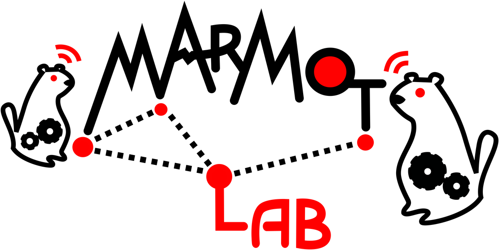
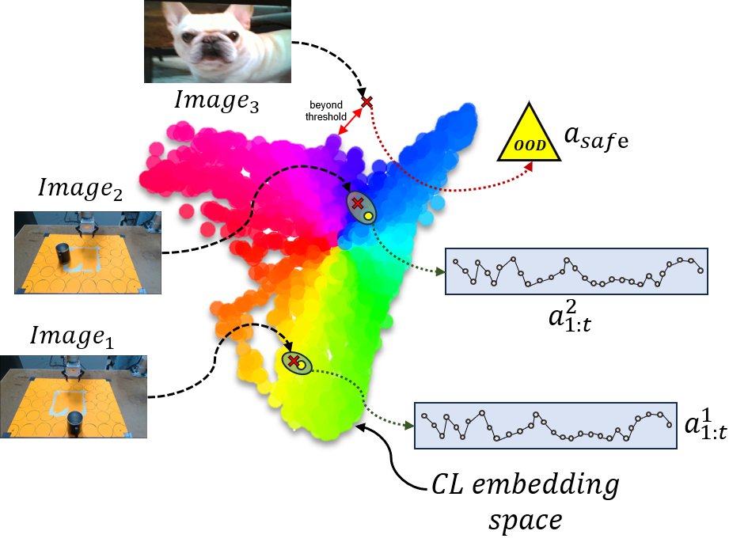
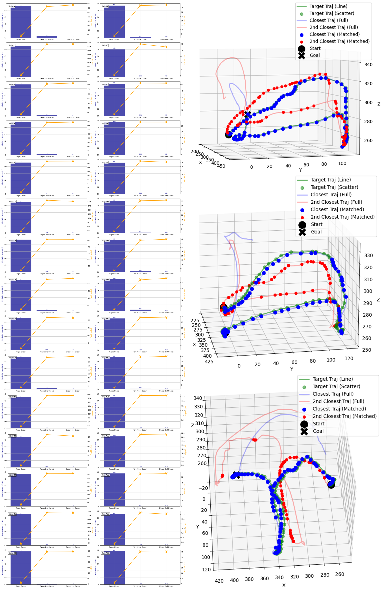

Diffusion policies have demonstrated remarkable dexterity and robustness in intricate, high-dimensional robot manipulation tasks, while training from a small number of demonstrations. However, the reason for this performance remains a mystery. In this paper, we offer a surprising hypothesis: diffusion policies essentially memorize an action lookup table—and this is beneficial. We posit that, at runtime, diffusion policies find the closest training image to the test image in a latent space, and recall the associated training action sequence, offering reactivity without the need for action generalization. This is effective in the sparse data regime, where there is not enough data density for the model to learn action generalization. We support this claim with systematic empirical evidence. Even when conditioned on wildly out of distribution (OOD) images of cats and dogs, the Diffusion Policy still outputs an action sequence from the training data. With this insight, we propose a simple policy, the Action Lookup Table (ALT), as a lightweight alternative to the Diffusion Policy. Our ALT policy uses a contrastive image encoder as a hash function to index the closest corresponding training action sequence, explicitly performing the computation that the Diffusion Policy implicitly learns. We show empirically that for relatively small datasets, ALT matches the performance of a diffusion model, while requiring only 0.0034 of the inference time and 0.0085 of the memory footprint, allowing for much faster closed-loop inference with resource constrained robots. We also train our ALT policy to give an explicit OOD flag when the distance between the runtime image is too far in the latent space from the training images, giving a simple but effective runtime monitor.
In this section we provide more supplementary details and visualization of the experimental results. We explain it from three aspects: diffusion model analysis, diffusion policy analysis, and ALT results.
Training a generative model from 2D points uniformly distributed on 4 different shaped 1D manifold. Orange indicates the training samples, black represents the random seeds used for diffusion, light cyan lines show the denoising flow direction, and blue marks the final inference results. Each subplot shows a different training regime. First row: A low-capacity model (~146 parameters) trained on a small dataset (20 samples) gives erratic inferences. Second row: The low-capacity model trained on a large dataset (100k samples) generalizes to the wrong manifold. Third row: A high-capacity model (~9.5 million parameters) trained on a small dataset (the Diffusion Policy regime) approximately memorizes the dataset, but does not generalize. All the inference (blue) overlay the training data (orange) points, essentially implementing a lookup table. Fourth row: A high-capacity model trained on a large dataset shows strong generalization to the correct data manifold (regime of large scale image diffusion models).
The core hypothesis of this paper is that the impressive smoothness and multimodality exhibited by diffusion policies stem not from explicit reasoning about the environment, but from their ability to hash from images to action sequences, memorized at training time through the high representational capacity of diffusion models.



Similarity and distance statistics between inference and training trajectories. Each subplot shows the similarity scores (blue bars) and average distances (orange lines) between the Diffusion Policy inference and training trajectories. The large gap between the closest and second-closest neighbors indicates strong alignment with specific training examples. In the presence of distractors, almost all high-similarity matches are sharply concentrated on a single training trajectory, indicating a surprising OOD default behavior. The diffusion model seems to revert to one or two fallback action sequences when presented with OOD images. Even when the input is entirely unrelated to the task, for example, an image of a cat or a dog, the diffusion model still produces an action sequence that closely resembles one from the training set. We believe those results show that the Diffusion Policy's decision-making is largely governed by memory retrieval, rather than by generalized reasoning over the action space.
In this section, we show the results of the ALT policy in the case of InD. In addition, we also show the reactive behavior and multimodality behavior of ALT.
Thirty in-distribution rollouts of the ALT policy. Hover over any clip to enlarge it.
Here, we compare the reactivity of our ALT Policy (left) to a standard Diffusion Policy (right). ALT’s inference is several orders of magnitude faster—allowing it to react quickly to changes in the visual scene. In this example, as the cup is moved, ALT adapts immediately and recomputes its action. Diffusion Policies, on the other hand, require slow and expensive sampling steps, making them sluggish in closed-loop control. ALT’s rapid response time results in smoother, more responsive robot behavior—especially in dynamic, real-time environments.
The multimodality behavior of ALT is similar to that of the Diffusion Policy. In this example, we show that ALT can produce multiple distinct action sequences for the same input image, which comes from the training dataset. This multimodality is a key feature of Diffusion Policies, enabling them to handle complex tasks with multiple valid solutions. Even without a generative model, the ALT policy can easily be adapted to have multimodal behavior as shown in the example cases 1 and 2. For each case we show three different trajectories for the same location. This shows that ALT can still model a multi-modal distribution that is present in the training data.
If you find this work useful, please consider citing:
@inproceedings{he2026demystifying,
title={Demystifying robot diffusion policies: Action memorization and a simple lookup table alternative},
author={He, Chengyang and Liu, Xu and Camps, Gadiel Mark Sznaier and Bruno, Joseph and Sartoretti, Guillaume Adrien and Schwager, Mac},
booktitle={The Fourteenth International Conference on Learning Representations},
year={2026}
}@article{he2025demystifying,
title={Demystifying Diffusion Policies: Action Memorization and Simple Lookup Table Alternatives},
author={He, Chengyang and Liu, Xu and Camps, Gadiel Sznaier and Sartoretti, Guillaume and Schwager, Mac},
journal={arXiv preprint arXiv:2505.05787},
year={2025}
}If you have any questions, feel free to contact Chengyang He, Xu Liu and Gadiel Sznaier Camps.